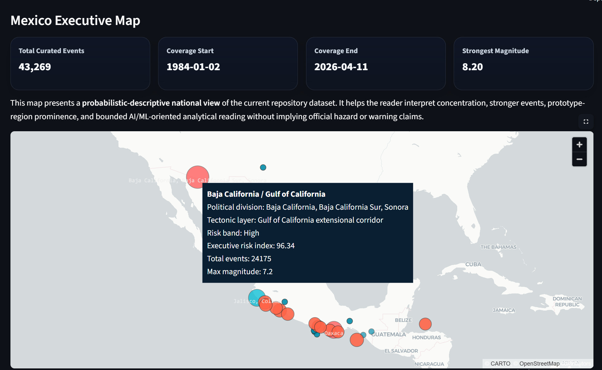
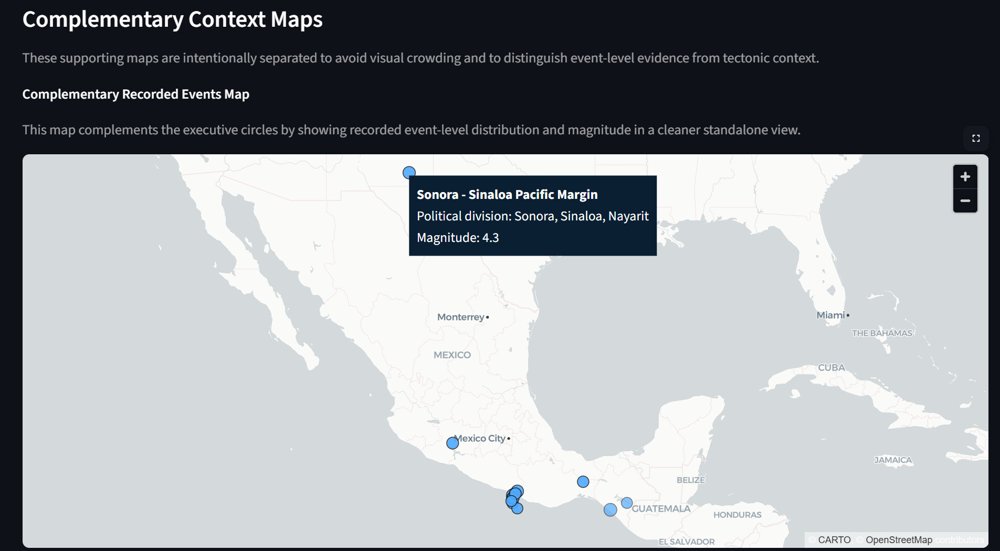
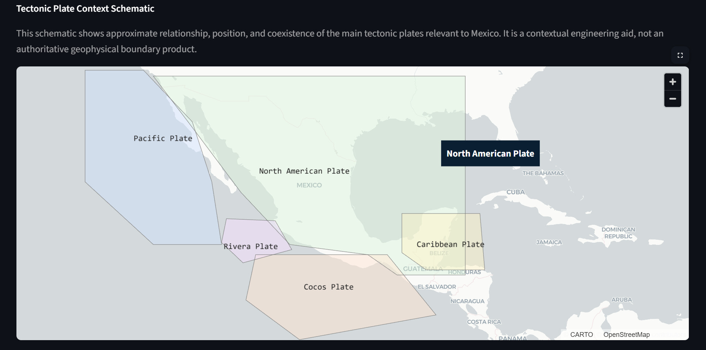

02 / Geographic interpretation
Maps as executive evidence, not decoration
The maps help a reader understand concentration patterns, regional separation, and tectonic framing without converting the prototype into an official geophysical product.
ObservePacific-margin and Gulf-of-California concentration become visually clear, while event-level evidence and regional summaries remain separated.
Decision valueThe visuals justify regional aggregation instead of treating Mexico as a uniform analytical surface.
Quality signalClean tooltip fields and separated map layers protect publication credibility.
Boundary: these maps support descriptive prototype reading only; they are not official hazard maps or authoritative plate-boundary products.

Executive map: concentration, selected regional prominence, and normalized tooltip semantics.

Recorded events: supporting event-level evidence, intentionally separated from aggregate regional reading.

Tectonic context: an engineering aid for interpretation, not a formal boundary authority.